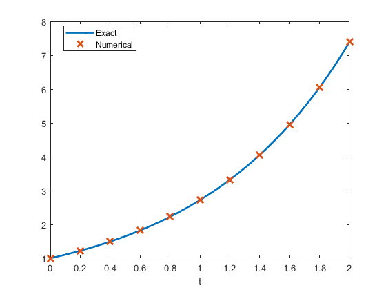
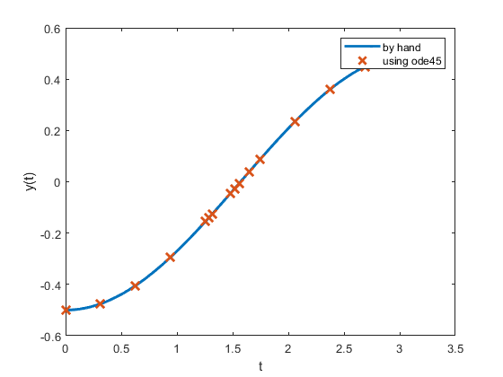
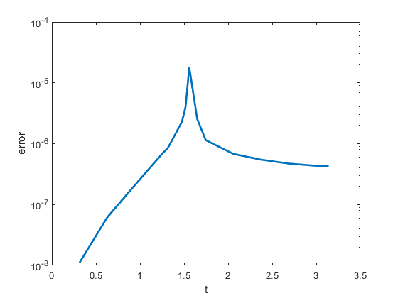
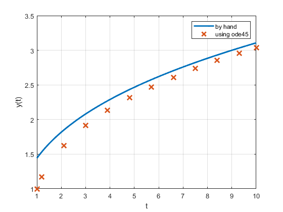
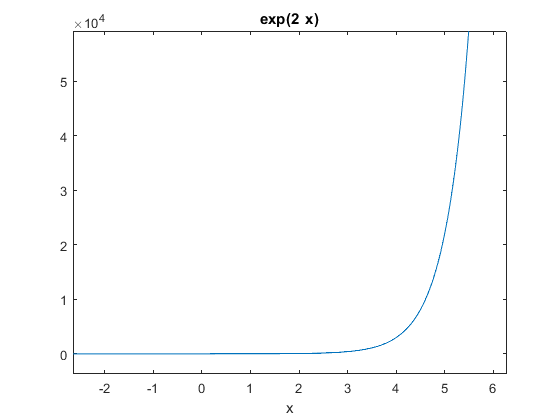
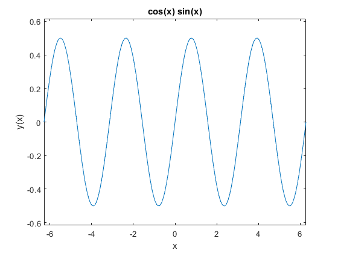
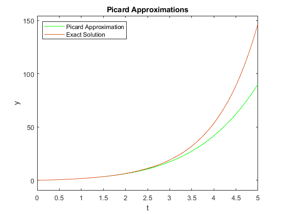
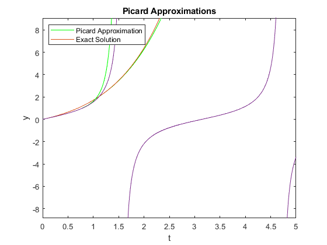

Integrator Lab: Solving First Order ODEs in MATLAB and Picard Approximation
This lab will teach you to numerically solve first order ODEs using a built in MATLAB integrator, ode45. ode45 is a good, general purpose tool for integrating first order equations (and first order systems). It is not always the right algorithm, but it is usually the right algorithm to try first. This lab will also teach you how to manipulate symbolic functions in MATLAB.
You will learn how to use the ode45 routine, how to interpolate between points, and how MATLAB handles data structures. You will also learn how to use MATLAB for exact symbolic calculations and write your own Picard approximation code.
Opening the m-file lab2.m in the MATLAB editor, step through each part using cell mode to see the results. Compare the output with the PDF, which was generated from this m-file.
There are eight exercises in this lab that are to be handed in at the end of the lab. Write your solutions in the template, including appropriate descriptions in each step. Save the .m file and submit it online using Quercus.
Contents
- Student Information
- Set up an inline function representation of an ODE and solve it
- Examining the output
- Understanding the components of the solution data structure
- Visualizing and comparing the solution
- Exercise 1
- Computing an approximation at a specific point
- Exercise 2
- Errors, Step Sizes, and Tolerances
- Exercise 3
- Exercise 4
- Exercise 5
- Exercise 6 - When things go wrong
- Using symbolic variables to define functions
- Exercise 7
- Obtaining Picard approximations
- Exercise 8
Student Information
Student Name: Patricia Nadia Krisanti
Student Number: 1009669404
Set up an inline function representation of an ODE and solve it
MATLAB has many built in routines for solving differential equations of the form
y' = f(t,y)
We will solve them using ode45, a high precision integrator. To do this, we will need to construct an inline function representation of f, an initial condition, and specify how far we want MATLAB to integrate the problem. Once we have set these, we pass the information to ode45 to get the solution.
For a first example, we will solve the initial value problem
y' = y, y(0) = 1
which has as its answer y = e^t.
% Set up the right hand side of the ODE as an inline function f = @(t,y) y; % The initial conditions t0 = 0; y0 = 1; % The time we will integrate until t1 = 2 soln = ode45(f, [t0, t1], y0);
t1 =
2
Examining the output
When we execute the ode45, it returns a data structure, stored in soln. We can see the pieces of the data structure with a display command:
disp(soln);
solver: 'ode45'
extdata: [1×1 struct]
x: [0 0.2000 0.4000 0.6000 0.8000 1 1.2000 1.4000 1.6000 1.8000 2]
y: [1 1.2214 1.4918 1.8221 2.2255 2.7183 3.3201 … ] (1×11 double)
stats: [1×1 struct]
idata: [1×1 struct]
Understanding the components of the solution data structure
The most important elements of the data structure are stored in the x and y components of the structure; these are vectors. Vectors x and y contain the points at which the numerical approximation to the initial vlaue problem has been computed. In other words, y(j) is the approximate value of the solution at x(j).
NOTE: Even though we may be studying a problem like u(t) or y(t), MATLAB will always use x for the independent variable and y for the dependent variable in the data structure.
Pieces of the data structure can be accessed using a period, as in C/C++ or Java. See the examples below:
% Display the values of |t| at which |y(t)| is approximated fprintf(' Vector of t values: '); disp(soln.x); % Display the the corresponding approximatations of |y(t)| fprintf(' Vector of y values: '); disp(soln.y); % Display the approximation of the solution at the 3rd point: fprintf(' Third element of the vector of t values: %g\n',soln.x(3)); fprintf(' Third element of the vector of y values: %g\n',soln.y(3));
Vector of t values: Columns 1 through 7
0 0.2000 0.4000 0.6000 0.8000 1.0000 1.2000
Columns 8 through 11
1.4000 1.6000 1.8000 2.0000
Vector of y values: Columns 1 through 7
1.0000 1.2214 1.4918 1.8221 2.2255 2.7183 3.3201
Columns 8 through 11
4.0552 4.9530 6.0496 7.3891
Third element of the vector of t values: 0.4
Third element of the vector of y values: 1.49182
Visualizing and comparing the solution
We can now visualize the solution at the computed data points and compare with the exact solution.
% Construct the exact solution tt = linspace(0,2,50); yy = exp(tt); % Plot both on the same figure, plotting the approximation with x's plot(tt, yy, soln.x, soln.y, 'x', 'MarkerSize',10, 'LineWidth', 2); % NOTE: the MarkerSize and LineWidth are larger than their defaults of 6 % and 1, respectively. This makes the print out more readable. % Add a label to the axis and a legend xlabel('t'); legend('Exact', 'Numerical','Location','Best');
Exercise 1
Objective: Solve an initial value problem and plot both the numerical approximation and the corresponding exact solution.
Details: Solve the IVP
y' = y tan t + sin t, y(0) = -1/2
from t = 0 to t = pi.
Compute the exact solution (by hand), and plot both on the same figure for comparison, as above.
Your submission should show the construction of the inline function, the use of ode45 to obtain the solution, a construction of the exact solution, and a plot showing both. In the comments, include the exact solution.
Label your axes and include a legend.
%making inline function f = @(t,y) y*tan(t)+sin(t); % The initial conditions t0 = 0; y0 = -1/2; % The time we will integrate until t1 = pi %obtaining solution using ode45 sol = ode45(f, [t0, t1], y0); %plot(sol.x,sol.y) %exact solution of y' = y tan t + sin t, y(0) = -1/2 is % y=-cos(x)/2 %constructing exact solution x=linspace(0,pi,1000); y=-cos(x)/2; %plotting exact and approximated solutions plot(x,y, sol.x, sol.y,'x', 'MarkerSize',10, 'LineWidth', 2 ) xlabel('t') ylabel('y(t)') legend('by hand', 'using ode45');
t1 =
3.1416
 Computing an approximation at a specific point
As you should be able to see by examining soln.x, ode45 returns the solution at a number of points between t0 and t1. But sometimes we want to know the solution at some intermediate point.
To obtain this value, we need to interpolate it in a consistent way. Fortunately, MATLAB provides a convenient function, deval, specifically for this.
% Compute the solution at t = .25: deval(soln, .25) % Compute the solution at t = 1.6753: fprintf(' Solution at 1.6753: %g\n', deval(soln, 1.6753)); % Compute the solution at 10 grid points between .45 and 1.65: tinterp = linspace(.45, 1.65, 10); deval(soln, tinterp) % Alternatively: deval(soln, linspace(.45, 1.65, 10))
ans =
1.2840
Solution at 1.6753: 5.3404
ans =
Columns 1 through 7
1.5683 1.7920 2.0476 2.3396 2.6734 3.0547 3.4903
Columns 8 through 10
3.9882 4.5570 5.2070
ans =
Columns 1 through 7
1.5683 1.7920 2.0476 2.3396 2.6734 3.0547 3.4903
Columns 8 through 10
3.9882 4.5570 5.2070
Exercise 2
Objective: Interpolate a solution at a number of grid points
Details: For the solution you computed in exercise 1, use deval to compute the interpolated values at 10 grid points between 2 and 3.
interp=linspace(2,3,10); deval(sol,interp)
ans =
Columns 1 through 7
0.2081 0.2572 0.3032 0.3454 0.3833 0.4166 0.4447
Columns 8 through 10
0.4673 0.4841 0.4950
Errors, Step Sizes, and Tolerances
As you may have noticed, in contrast to the IODE software, at no point do we set a step size for our solution. Indeed, the step size is set adaptively to conform to a specified error tolerance.
Roughly speaking, given the solution at (t_j, y_j), ode45 computes two approximations of the solution at t_{j+1} = t_j + h; one is of greater accuracy than the other. If the difference is below a specified tolerance, the step is accepted and we continue. Otherwise the step is rejected and the smaller step size, h, is used; it is often halved.
We can compute the global truncation error at each solution point, figure out the maximum error, and visualize this error (on a linear-log scale):
% Compute the exact solution yexact = exp(soln.x); % Compute the pointwise error; note the use of MATLAB's vectorization err = abs(yexact - soln.y); disp(err); fprintf('maximum error: %g \n', max(err)); semilogy(soln.x, err, 'LineWidth', 2); xlabel('t'); ylabel('error');
1.0e-06 *
Columns 1 through 7
0 0.0152 0.0371 0.0679 0.1106 0.1688 0.2475
Columns 8 through 11
0.3526 0.4922 0.6764 0.9179
maximum error: 9.17923e-07

Exercise 3
Objective: Examine the error of a solution generated by ode45
Details: For your solution to exercise 1, compute the pointwise error, identify the maximum value of the error, and visualize the error on a linear-log plot (use semilogy to plot the log of the error vs. t). Write in the comments where the error is largest, and give a brief (1-2 sentences) explanation of why it is largest there. Make sure to label your axes.
% exact solution yex = -cos(sol.x)/2; % pointwise error err = abs(yex - sol.y); disp(err); %maximum value of the error fprintf('maximum error: %g \n', max(err)); %plotting the error on a linear-log plot semilogy(sol.x, err, 'LineWidth', 2); xlabel('t'); ylabel('error'); %highest error is when t is approximately 1.6 or pi/2, the error is highest in %t=1.6 or pi/2 because as the ode45 approximates the value along the graph, %it assumes that the graph is continuous. % However, in the ODE dy/dx =y*tan(t)+sin(t), tan(t) is not continuous on % pi/2. tan(t) has an asympote, which causes the huge spike of error on the % approximation as the value of tan(t) is undefined.
1.0e-04 *
Columns 1 through 7
0 0.0001 0.0006 0.0021 0.0070 0.0077 0.0087
Columns 8 through 14
0.0230 0.0408 0.1807 0.0254 0.0114 0.0068 0.0055
Columns 15 through 17
0.0047 0.0043 0.0043
maximum error: 1.8068e-05
 Exercise 4
Objective: Solve and visualize a nonlinear ode using ode45
Details: Solve the IVP
y' = 1 / y^2 , y(1) = 1
from t=1 to t=10 using ode45. Find the exact solution and compute the maximum pointwise error. Then plot the approximate solution and the exact solution on the same axes.
Your solution should show the definition of the inline function, the computation of its solution in this interval, the computation of the exact solution at the computed grid points, the computation of the maximum error, and a plot of the exact and approximate solutions.
%Your axes should be appropriately labeled and include a legend. clear all f = @(t,y) 1 ./ (y.^2); % The initial conditions t0 = 1; y0 = 1; % The time we will integrate until t1 = 10 %computing approximate points sol = ode45(f, [t0, t1], y0); %computing exact points x=linspace(1,10,1000); y=(3*x).^(1/3); %plotting exact and approximate solutions plot(x,y, sol.x, sol.y,'x', 'MarkerSize',10, 'LineWidth', 2 ) xlabel('t') ylabel('y(t)') legend('by hand', 'using ode45'); grid on % exact solution yex =(3*sol.x).^(1/3); % pointwise error err = abs(yex - sol.y); disp(err); %maximum error fprintf('maximum error: %g \n', max(err));
t1 =
10
Columns 1 through 7
0.4422 0.3627 0.2224 0.1684 0.1385 0.1191 0.1054
Columns 8 through 12
0.0950 0.0869 0.0803 0.0748 0.0711
maximum error: 0.44225
 Exercise 5
Objective: Solve and visualize an ODE that cannot be solved by hand with ode45.
Details: Solve the IVP
y' = 1 - t y / 2, y(0) = -1
from t=0 to t=10.
Your solution should show you defining the inline function, computing the solution in this interval, and plotting it.
Your axes should be appropriately labeled
%defining inline function f = @(y,t) 1 - (t.*y)./ 2 %computing solution in the interval sol=ode45(f, [0,10],-1) %plotting the graph plot(sol.x,sol.y) xlabel('t'); ylabel('y(t)');
f =
function_handle with value:
@(y,t)1-(t.*y)./2
sol =
struct with fields:
solver: 'ode45'
extdata: [1×1 struct]
x: [0 0.2010 1.2010 2.2010 2.8484 3.4958 4.1908 … ] (1×17 double)
y: [-1 -0.7904 0.2527 0.7541 0.7677 0.6727 0.5530 … ] (1×17 double)
stats: [1×1 struct]
idata: [1×1 struct]

Exercise 6 - When things go wrong
Objective: Solve an ode and explain the warning message
Details: Solve the IVP:
y' = y^3 - t^2, y(0) = 1
from t=0 to t=1.
Your solution should show you defining the inline function, and computing the solution in this interval.
If you try to plot the solution, you should find that the solution does not make it all the way to t = 1.
In the comments explain why MATLAB generates the warning message that you may see, or fails to integrate all the way to t=1. HINT: Try plotting the direction field for this with IODE.
%defining inline function f = @(t,y) y.^3 - t.^2; % The initial conditions t0 = 0; y0 = 1; % The time we will integrate until t1 = 1 sol = ode45(f, [t0, t1], y0); %plot(sol.x,sol.y) plot(sol.x, sol.y) xlabel('t') ylabel('y(t)') legend( 'using ode45'); %Error Message: %Failure at t=5.066046e-01. Unable to meet integration tolerances without %reducing the step size below the smallest value allowed (1.776357e-15) at %time t. %This error is caused by the ODE45 not being able to meet the integration %tolerance or error limit that was being set. This is caused by the step size that is too large, %which increases the difference between the exact solution and the %aproximated solution, or the error in the solution.
t1 =
1

Using symbolic variables to define functions
We can define symbolic variables to let MATLAB know that these variables will be used for exact computations
% Start by defining the variables as symbolic syms t s x y % Define a function by simply writing its expression f = cos(t) g = sin(t) h = exp(2*x) % We can manipulate these functions simplify(f^2+g^2) diff(h) % We can plot a function defined symbolically using the command |ezplot|. % Learn about the command |ezplot|: help ezplot % Plot the function |f(t)| and |h(x)| ezplot(f) ezplot(h)
f =
cos(t)
g =
sin(t)
h =
exp(2*x)
ans =
1
ans =
2*exp(2*x)
EZPLOT (NOT RECOMMENDED) Easy to use function plotter
==========================================================
EZPLOT is not recommended. Use FPLOT or FIMPLICIT instead.
==========================================================
EZPLOT(FUN) plots the function FUN(X) over the default domain
-2*PI < X < 2*PI, where FUN(X) is an explicitly defined function of X.
EZPLOT(FUN2) plots the implicitly defined function FUN2(X,Y) = 0 over
the default domain -2*PI < X < 2*PI and -2*PI < Y < 2*PI.
EZPLOT(FUN,[A,B]) plots FUN(X) over A < X < B.
EZPLOT(FUN2,[A,B]) plots FUN2(X,Y) = 0 over A < X < B and A < Y < B.
EZPLOT(FUN2,[XMIN,XMAX,YMIN,YMAX]) plots FUN2(X,Y) = 0 over
XMIN < X < XMAX and YMIN < Y < YMAX.
EZPLOT(FUNX,FUNY) plots the parametrically defined planar curve FUNX(T)
and FUNY(T) over the default domain 0 < T < 2*PI.
EZPLOT(FUNX,FUNY,[TMIN,TMAX]) plots FUNX(T) and FUNY(T) over
TMIN < T < TMAX.
EZPLOT(FUN,[A,B],FIG), EZPLOT(FUN2,[XMIN,XMAX,YMIN,YMAX],FIG), or
EZPLOT(FUNX,FUNY,[TMIN,TMAX],FIG) plots the function over the
specified domain in the figure window FIG.
EZPLOT(AX,...) plots into AX instead of GCA or FIG.
H = EZPLOT(...) returns handles to the plotted objects in H.
Examples:
The easiest way to express a function is via a string:
ezplot('x^2 - 2*x + 1')
One programming technique is to vectorize the string expression using
the array operators .* (TIMES), ./ (RDIVIDE), .\ (LDIVIDE), .^ (POWER).
This makes the algorithm more efficient since it can perform multiple
function evaluations at once.
ezplot('x.*y + x.^2 - y.^2 - 1')
You may also use a function handle to an existing function. Function
handles are more powerful and efficient than string expressions.
ezplot(@humps)
ezplot(@cos,@sin)
EZPLOT plots the variables in string expressions alphabetically.
subplot(1,2,1), ezplot('1./z - log(z) + log(-1+z) + t - 1')
To avoid this ambiguity, specify the order with an anonymous function:
subplot(1,2,2), ezplot(@(z,t)1./z - log(z) + log(-1+z) + t - 1)
If your function has additional parameters, for example k in myfun:
%-----------------------%
function z = myfun(x,y,k)
z = x.^k - y.^k - 1;
%-----------------------%
then you may use an anonymous function to specify that parameter:
ezplot(@(x,y)myfun(x,y,2))
See also EZCONTOUR, EZCONTOURF, EZMESH, EZMESHC, EZPLOT3, EZPOLAR,
EZSURF, EZSURFC, PLOT, VECTORIZE, FUNCTION_HANDLE.
Documentation for ezplot
doc ezplot
Other uses of ezplot
sym/ezplot
 If we try to evaluate the function f(0), we get an error message.
The symbolic variables are not meant to be used to evaluate functions, but to manipulate functions, compute derivatives, etc. To evaluate a function using symbolic variables is a little cumbersome:
% We need to substitute the variable by a value:
subs(f,t,pi)
ans = -1
This expression means: In the expression f, substitute the variable t by the number pi.
% If we use a value where the cosine does not have a "nice" expression, we % need to approximate the result: subs(f,t,2) % We need to use the command |eval| eval(subs(f,t,2))
ans = cos(2) ans = -0.4161
Exercise 7
Objective: Define a function using symbolic variables and manipulate it.
Details: Define the function f(x) = sin(x)cos(x)
Use MATLAB commands to obtain a simpler form of this function, compute value of this function for x=pi/4 and x=1, and plot its graph.
syms x %make the 2 functions a=sin(x) b=cos(x) %combine the 2 functions S=simplify(a.*b) %evaluate the value of x=pi/4 and x=1 on the function fprintf('at x=pi/4, f(x)=%g',subs(S,x,pi/4)) fprintf('at x=1, f(x)=%g',subs(S,x,1)) %plotting using ezplot ezplot(a*b) ylabel('y(x)')
a = sin(x) b = cos(x) S = sin(2*x)/2 at x=pi/4, f(x)=0.5at x=1, f(x)=0.454649
Obtaining Picard approximations
Consider an initial value problem
y' = 1 + y y(0) = 0
First we need to define the variables we will be using
syms t s y; % We then need to define the function f f = 1+y % we define it without the @(t,y) because it is a symbolic function % We set up our initial approximation phi_0 = 0: phi=[sym(0)] % we will keep a list with all the approximations % Set up a loop to get successive approximations using Picard iterations N=5; for i = 1:N func=subs(f,y,phi(i)); % prepare function to integrate: y -> previous phi func=subs(func,t,s); % variable of integration is s, so we need to change % t -> s newphi = int(func, s, 0 ,t); % integrate to find next approximation phi=cat(2,phi,[newphi]); % update the list of approximations by adding new phi end % Show the last approximation phi phi(N+1) % Plot the approximation just found picard=ezplot(phi(N+1),[0,5]) set(picard,'Color','green') % set the color of the graph to green % In this case, the exact solution is % % |y=e^t-1| % % Compare the approximation and the exact solutions hold on; exact=ezplot(exp(t)-1,[0,5]); xlabel('t'); ylabel('y'); title('Picard Approximations'); legend('Picard Approximation', 'Exact Solution','Location','NorthWest'); clear all
f =
y + 1
phi =
0
phi =
[0, t, (t*(t + 2))/2, (t*(t^2 + 3*t + 6))/6, (t*(t^3 + 4*t^2 + 12*t + 24))/24, (t*(t^4 + 5*t^3 + 20*t^2 + 60*t + 120))/120]
ans =
(t*(t^4 + 5*t^3 + 20*t^2 + 60*t + 120))/120
picard =
Line with properties:
Color: [0 0.4470 0.7410]
LineStyle: '-'
LineWidth: 0.5000
Marker: 'none'
MarkerSize: 6
MarkerFaceColor: 'none'
XData: [0 0.0115 0.0231 0.0346 0.0462 0.0577 … ] (1×434 double)
YData: [0 0.0116 0.0234 0.0352 0.0473 0.0594 … ] (1×434 double)
Use GET to show all properties
 Exercise 8
Objective: Solve your own Picard Approximation and compare it to the exact solution.
Details: Consider the IVP | y' = 1+y^2| | y(0) = 1 |
Find the Picard approximation phi_5. For better efficiency, do not keep all the previous approximations.
Compute the exact solution (by hand), and plot both on the same figure for comparison, as above.
Label your axes and include a legend.
HINT. The initial condition has 1 instead of 0, so the Picard method needs to be adapted.
syms t s y; % We then need to define the function f f = 1+y.^2 % we define it without the @(t,y) because it is a symbolic function % We set up our initial approximation phi_0 = 0: phi=[sym(1)] % we will keep a list with all the approximations % Set up a loop to get successive approximations using Picard iterations N=5; for i = 1:N func=subs(f,y,phi(i)); % prepare function to integrate: y -> previous phi func=subs(func,t,s); % variable of integration is s, so we need to change % t -> s newphi = int(func, s, 0 ,t); % integrate to find next approximation phi=cat(2,phi,[newphi]); % update the list of approximations by adding new phi end % Show the last approximation phi(N+1) % Plot the approximation just found picard=ezplot(phi(N+1),[0,5]); set(picard,'Color','green'); % set the color of the graph to green % In this case, the exact solution is % % |y=tan(t)| % % Compare the approximation and the exact solutions hold on; exact=ezplot(tan(t),[0,5]); xlabel('t'); ylabel('y'); title('Picard Approximations'); legend('Picard Approximation', 'Exact Solution','Location','NorthWest'); clear all
f = y^2 + 1 phi = 1 ans = (65536*t^31)/109876902975 + (131072*t^29)/21210236775 + (412598272*t^27)/14119435204875 + (307044352*t^25)/3016973334375 + (5270947328*t^23)/16962094524375 + (30791168*t^21)/40226311125 + (181075264*t^19)/109185701625 + (6000032*t^17)/1550674125 + (5238853*t^15)/638512875 + (3580*t^13)/243243 + (4562*t^11)/155925 + (134*t^9)/2835 + (17*t^7)/315 + (2*t^5)/15 + t^3/3 + t